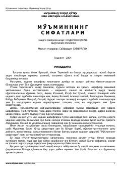

MSMoʻmin kishining axloqiy fazilatlari va xislatlari haqidagi hadislar sharhi.
Ushbu asar shayx Muhammad Zohid Qoʻtqu tomonidan yozilgan boʻlib, unda har bir moʻmin-musulmon kishi ega boʻlishi lozim boʻlgan axloqiy fazilatlar va xislatlar qirqta hadis sharhi asosida bayon etilgan. Kitob insonlarni halollikka, poklikka va oʻzaro ishonchli boʻlishga daʼvat etadi.